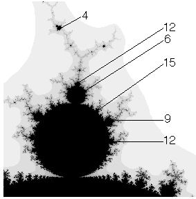

|  |
| For the discs attached around any n-cycle component, the principal series and Farey sequence rules apply, but multiplied by the cycle number n of the component. |
| For example, the discs attached to a 3-cycle disc follow the principal series, but multiplied by 3: |
| we see a 6 (= 3⋅2) -cycle disc, and on each side a sequence of 9 (= 3⋅3), 12 (= 3⋅4), ... discs |
| the Farey sequence fills in the rest of the discs. |
Return to Combinatorics in the Mandelbrot Set.